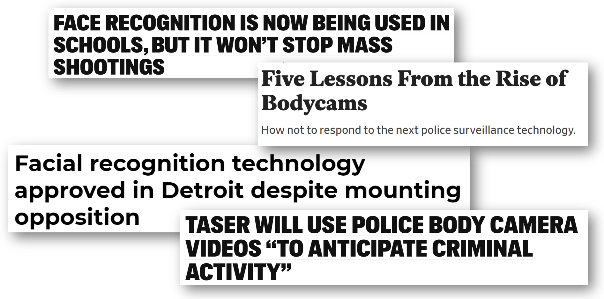

As governments consider new uses of technology, whether that be sensors on taxi cabs, police body cameras, or gunshot detectors in public places, this raises issues around surveillance of vulnerable populations, unintended consequences, and potential misuse. There are several principles to keep in mind in how these decisions can be made in a healthier and more responsible manner. It can be tempting to reduce debates about government adoption of technology into binary for/against narratives, but that fails to capture many crucial and nuanced aspects of these decisions.
We recently hosted the Tech Policy Workshop at the USF Center for Applied Data Ethics. One of the themes was how governments can promote the responsible use of technology. Here I will share some key recommendations that came out of these discussions.

Listen to local communities
There aren’t universal ethical answers that will make sense in every country and culture. Therefore, decisions on technology use should be made in close consultation with local communities. In 2013, Oakland announced plans for a new Domain Awareness Center (DAC), which would implement over 700 cameras throughout schools and public housing, facial recognition software, automated license plate readers (ALPRs), storage capacity for 300 terabytes of data, and a centralized facility with live monitroy. Brian Hofer was an Oakland resident who had never set foot in City Hall prior to this, but he was alarmed by the plans, particularly in light of Edward Snowden’s revelations, which had been released the same month. Together with other citizens and privacy advocates, Hofer was concerned about the intrusiveness of the plans and began attending city council meetings. There were a number of reasons for their concerns, including the discovery that city staff had been discussing using DAC to surveil protests and demonstrations. Through the advocacy of local citizens, the plans were dramatically scaled back and the Oakland Privacy Commission was formed, which continues to provide valuable insight into potential government decisions and purchases.
Sadly, the concerns of local communities are often overridden, in part due to corporate interests and racist stereotypes. For instance, in Detroit, a city that is 79% Black, citizens protested against police use of facial recognition. Yet the city council ended up voting to okay its use, in violation of the police department’s own policy. In contrast, the demographics of cities that have been successful at banning facial recognition are quite different: San Francisco is only 5% Black and Oakland is 25% Black (credit to Tawana Petty for highlighting these statistics). The racial composition of cities is a significant factor in where and how technology is deployed and used. In another sobering example of the significance of race, Baltimore Police Department used facial recognition to identify people protesting the death of Freddie Gray, a Black man killed in police custody.
Beware how NDAs obscure public sector process and law
In order for citizens to have a voice in the use of technology by their local governments, the first step is that they need to know what technology is being used. Unfortunately, many local governments are shrouded in secrecy on this topic, and they often sign overly strict non-disclosure agreements (NDAs), hiding even the existence of the technology they use. In 2017 New York City passed a measure appointing a task force on Automated Decision Systems to investigate the fairness of software being used by the city and make policy recommendations. However, members of the task force were repeatedly denied their requests for even a basic list of automated systems already in use, with the city claiming that this is proprietary information. When the city released the final report from the commission, many members dissented with it and released their own shadow report in tandem. Meredith Whittaker, a member of the task force and founder of AI Now Institute, described the city’s failure to share relevant information in what could have been a groundbreaking project, “It’s a waste, really. This is a sad precedent.”
The law typically develops through lots of cases over time, explained Elizabeth Joh. However, NDAs often prevent citizens from finding out that a particular technology even exists, much less how it is being used in their city. For instance, cell-site simulators (often referred to as sting-rays), which help police locate a person’s cell phone, were protected by particularly strong NDAs, in which police had to agree that it was better to drop a case than to reveal that a cell-site simulator had been used in apprehending the suspect. How can our law develop when such important details remain hidden? The traditional process of developing and refining our legal system breaks down. “Typically we think we have oversight into what police can do,” Joh has said previously. “Now we have third-party intermediary, they have a kind of privacy shield, they’re not subject to state public record laws, and they have departments sign contracts that they are going to keep this secret.”
Security is not the same as safety
Project Green Light is a public-private partnership in Detroit in which high-definition surveillance cameras outside business stream live data to police and are prioritized by police over non-participants. Over 500 businesses are a part of it. This is the largest experiment of facial recognition on a concentrated group of Black people (700,000) to date. Black people are disproportionately likely to be stopped by police (even though when police search Black, Latino and Native American people, they are less likely to find drugs, weapons or other contraband compared to when they search white people), disproportionately likely to be written up on minor infractions, and thus disproportionately likely to have their faces appear in police face databases (which are unregulated and not audited for mistakes). This is particularly concerning when combined with knowledge of America’s long history of surveilling and abusing Black communities. While the aims of the program are ostensibly to make Detroit safer, we have to ask, “Safer FOR who? And safer FROM whom?”

Tawana Petty is a poet and social justice organizer who was born and raised in Detroit. She serves as Director of Data Justice Programming for the Detroit Community Technology Project and co-leads the Our Data Bodies Project. At the CADE Tech Policy Workshop she shared how Project Green Light makes her feel less safe, and gave a more hopeful example of how to increase safety: give people chairs to sit on their front porches and encourage them to spend more time outside talking with their neighbors. Myrtle Thompson-Curtis wrote about the origins of the idea: in 1980 in Milwaukee “a group of young African Americans remembered how elders would sit on the front porch and keep an eye on them when they were small. These watchful eyes gave them a sense of safety, of being cared for and looked out for by the community. When these youth grew into adulthood, they noticed that no one sat on their porches anymore. Instead people were putting bars on their doors and windows, fearing one another.” Young people went door to door and offered free chairs to neighbors if they would agree to sit on their front porches while children walked to and from school. This program has since been replicated in St. Clair Shores, Michigan, to help defuse racial tensions, and now in Detroit, to illustrate an alternative to the city’s invasive Green Light Surveillance program. “Security is not safety,” Tawana stated, contrasting surveillance with true safety.
Rumman Chowdhury, the leader of the Responsible AI group at Accenture, pointed out that surveillance is often part of a stealth increase in militarization. While on the surface, militarization is sold as improving security, it can often have the opposite effect. Low-trust societies tend to be very militarized, and militarized societies tend to be low-trust. As Zeynep Tufekci wrote in Wired, sociologists distinguish between high-trust societies (in which people can expect most interactions to work and to have access to due process) and low-trust societies (in which people expect to be cheated and that there is no recourse when you are wronged). In low trust societies, it is harder to make business deals, to find or receive credit, or to forge professional relationships. People in low-trust societies may also be more vulnerable to authoritarian rulers, who promise to impose order. We are already seeing a shift of the internet having gone from a high-trust environment to a low-trust environment, and the use of surveillance may be accelerating this shift in the physical world.
Policy decisions should not be outsourced as design decisions
When considering police body cameras, there are a number of significant decisions: should the officer be able to turn them on and off at any time? Should the camera have a blinking red light to let people know it is recording? Where should the videos be stored and who should have access to them? Even though these decisions will have a profound impact on the public, they are currently decided by private tech companies. This is just one of the examples Elizabeth Joh shared in illustrating how what should be policy decisions often end up being determined by corporations as design decisions. In the case of police body cameras, this lack of choice/control is worsened by the fact that Axon (previously known as Taser) has a monopoly on police-body cameras: since they have a relationship with 17,000 of the 18,000 police departments in the USA, cities may not even have much choice. Vendor-customer relationships influence how police do their jobs and how we can hold them accountable.
Heather Patterson, a privacy researcher at Intel and a member of Oakland’s Privacy Commission, spoke about how tech companies often neglect cities, failing to build products that fit with their needs and requirements, and treating them as an afterthought. In many cases, cities may want to have fewer options or collect less data, which goes against the prevailing tech approach which Mozilla Head of Policy Chris Riley described as “collect now, monetize later, store forever just in case”.

These principles can guide us towards a more responsible use of technology by local governments. Technology can be used for good when it is developed and deployed responsibly, with input from a diverse group of relevant stakeholders, and embedded with the appropriate transparency and accountability.
More responsible government use of technology was just one of the themes discussed at the Tech Policy Workshop. Stay tuned for more resources and insights from the workshop!